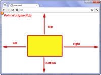
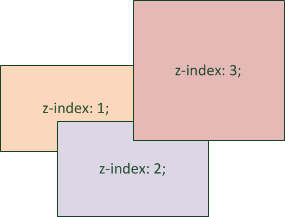

Le positionnement flottant
Ceci n'est pas la meilleur facon de faire mais elle est couramment utilisee.
On utilise la propriete "float", la meme qui nous a permis de faire flotter le texte autour d'une image,
alors qu'elle n'a pas ete concu pour ca.
Ensuite on utilise les bordures et le modele des
boites pour l'agencement de maniere plus esthetique.
A l'inverse, pour qu'un element se place obligatoirement sous le menu il faut utiliser "clear: both;" qu'on a deja vu.
Transformer ses elements avec display
La propriete "display" permet de transformer n'importe quel element en un autre type. Par exemple, un lien est transforme en bloc.
Voici quelques-unes des principales valeurs que peut prendre la propriété display en CSS (il y en a encore d'autres) :
- "inline" pour a, em, span... : elements d'une ligne. Se placent les uns a cote des autres.
- "block" pour p, div, section... : elements en forme de bloc. Se placent les uns en dessous des autres et peuvent etre redimensionnes
- "inline-block" pour select, input : elements positionnes les uns a cote des autres (comme les inlines) mais qui peuvent etre redimensionnes (comme les blocs).
- "none" pour head : elements non affiches.
On peut ainsi masquer completement un element de la page, il suffit d'ecrire : "display: none;". Pour les faire apparaitre par la suite, il faudra utiliser JavaScript. Cela sert pour masquer les sous-menus qui ne s'affiche seulement lorsque qu'on parcourt les menus.
Le type "inline-block" est un melange de inlines et de blocs.
Des qu'il y a plus d'un menu a affiche les floats sont mal geres et le recours a "clear: both;" complexifie le code de la page. C'est pour cela qu'on utilise "display: inline-block;".
Cela va mettre nos bloc sur une meme ligne donc il faudra redefinir la ligne de base (baseline) avec la propriete "vertical-align" qui peut prendre les valeurs suivantes :
- "baseline" : alignement de la base de l'element avec celle de l'element parent (par defaut)
- "top" : aligne en haut
- "middle" : centre verticalement
- "bottom" : aligne en bas
- valeur en px ou % : aligne a une certaine distance de la ligne de base (baseline)
Les positionnements absolu, fixe et relatif
On utilise la propriete "position" avec :
- "absolute" : permet de placer n'importe ou l'element On utilise ensuite 4 proprietes CSS : "left", "right", "top" et "bottom". On peut leur donner une valeur en px ou en %. Voyer par vous meme : 
- "fixed" : idem absolu sauf que l'element reste toujours visible meme s'il on descend dans la page.
- "relative" :permet de decaler l'element par rapport a sa position normale
Les éléments positionnés en absolu sont placés par-dessus le reste des éléments de la page ! Il faut utiliser la propriete z-index avec l'ordre d'affichage (1,2,3,...). 

Si vous appliquez une des propriétés top, left, right ou bottom, le texte sur fond rouge va se déplacer par rapport à la position où il se trouve.